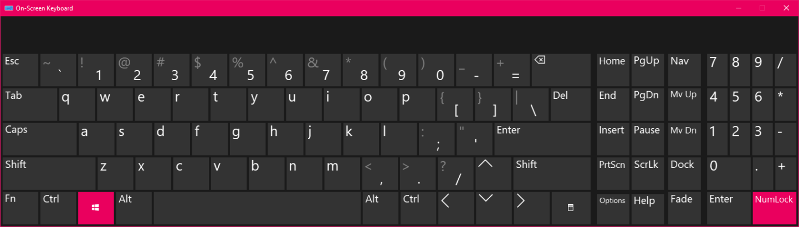
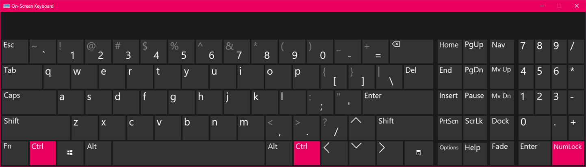

General Use & Navigation

In this guide, I'll outline several essential features of Windows 10 along with some additional programs useful for any visually impaired user. To start, let's go over some keys and where they are located on your keyboard, as we will be using them later.
The Windows Key
The Windows key is the second key from the left on the bottom row of your keyboard. Pressing it brings up the "Start menu' where you can see your installed apps, settings menu and search bar

Number pad + and Number pad -, aka Numpad + and Numpad -
The number pad is located on the righthand side of your keyboard. Its keys have unique shapes, is centered on the number 5, which has a nub in the middle. At the bottom righthand corner of the numpad and keyboard is " Numpad Enter" which functions similarly to the enter key in the main grouping of keys on your keyboard. Just above numpad enter is numpad +, which is a long, vertical key and just above that is numpad - which is a normally sized key. On their own, these keys behave like the other + and - keys on your keyboard, but their particular position and different sizes make them useful for some functions later on.
Note: It is possible that your keyboard may not have a number pad. This is especially likely if you are using a laptop. If this is the case, locate the = and - keys, which are one and two keys to the left of the backspace key respectively. Backspace is located at the top right corner of the main grouping of keys and is roughly twice the size of standard keys.
Control
The control key is located at the bottom left-hand corner of your keyboard, just to the left of the Windows key. On it's own, it does nothing. But when combined with other keys, it can perform a variety of functions. There is another control key located at the bottom right side of the main grouping of keys.
Alt
Alt is located one key to the right of the the Windows key at the bottom left of your keyboard. Alt is very similar to Control, and alone, it does nothing. But when combined with other keys, it has a variety of functions. There is an identical alt key to the right of the spacebar as well.
Tab
Tab is located at the left end of the second row from the top of the main grouping of keys. Tab allows you to change between different text fields (areas on a website or program where you enter text). In addition, it can have some useful functions when combined with other keys.
Now that we've located these keys, we're going to combine them and put them to use in some interesting ways.
Putting It Together
To start, pressing the Windows key and numpad +, or alternatively, Windows key and = will activate Windows built in magnifying software. Repeating this will cause the level of magnification to increase. To decrease magnification, press Windows key and numpad -, or alternatively, Windows key and minus(-). By default, the magnification will increase or decrease by 100% per increment. This can be changed in the Magnifier settings of the Ease of Access menu.
Magnifier Settings
In the Magnifier settings, you can also change the type of magnifier. Fullscreen enlarges your entire screen, giving you the greatest amount of magnified view while sacrificing the ability to see a great deal of your desktop. It is generally very useful and if you actively use the shortcuts Windows key and numpad + or numpad - to adjust your magnification level frequently, you can retain to see both small items and the bigger picture.
Lens
Next is Lens. Probably the least practical of the magnification types. Lens creates a smaller area of magnification that follows your mouse pointer, allowing you to see most of your desktop, unaltered, while enlarging what is directly around your mouse pointer. Still useful, but not as practical as Fullscreen mode or as out of the way as the next mode.
Docked
The next and last magnification type is Docked. Docked mode allows you to detach your magnifier from your mouse. It creates a magnifier window that you can move around and resize freely, which will remain wherever you place it. The view on the dock follows your mouse pointer but now you can place your magnifier someplace out of the way and only look at it when you actually need it. Docked mode is especially handy if you have a second monitor to put the docked magnifier on.
Magnifier Setup - Wrapping Up
In addition, you can invert the colors on your magnifier from this menu, which can be helpful if you find the colors of something you are looking at to be difficult to read.
You can quickly swap between these magnification modes, or invert or un-invert your magnifier colors by utilizing the following shortcuts.
Fullscreen: Control + Alt + F
Lens: Control + Alt + L
Docked: Control + Alt + D
Invert Colors/Un-Invert Colors: Control + Alt + i